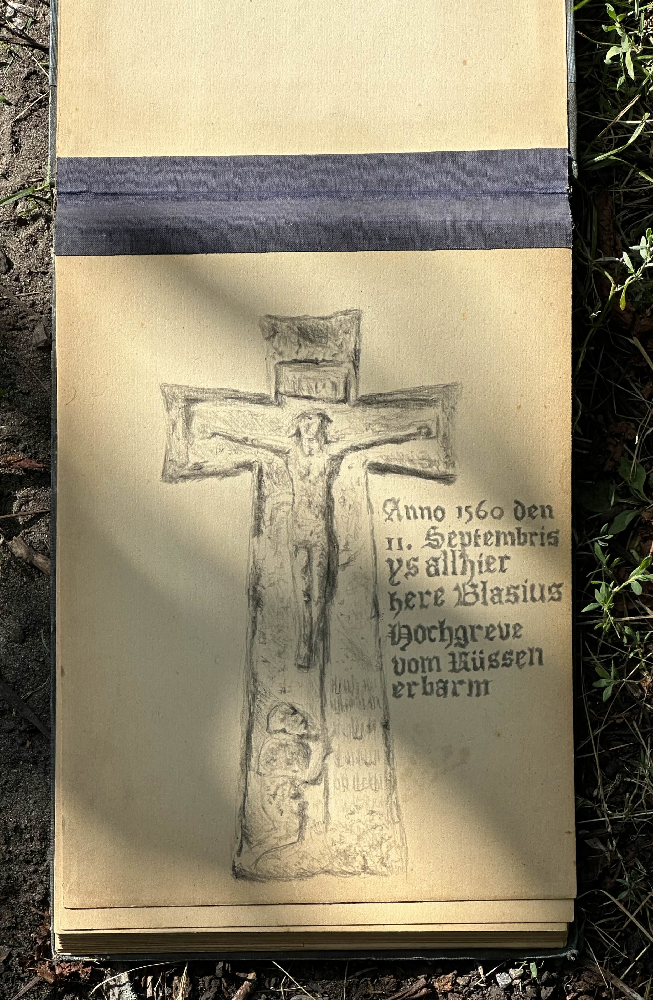

465 years ago, a man named Blachius Hochgrewe was slain while defending Tallinn from Muscovite invaders. Not long after, a limestone cross was raised at the site of his death, a testament to his bravery and sacrifice.
It is a quiet monument, standing in the shadow of the old town, a reminder of the country’s turbulent past. Blachius is shown kneeling before the cross, his helmet and shield laid at his side. On the back, a message in Low German is carved into the stone:
"In the year 1560, on September 11, Mr. Blasius Hochgreve was mercilessly killed here by the Russians. May God have mercy on him and grant him a joyful resurrection to eternal life on the last day. Amen."
This weathered stone has borne witness to 465 years of repeated invasions, occupations, and wars. Somehow it was spared the worst of time, and now it stands as a symbol of resilience and endurance.
I stumbled across this monument last year, just a few streets from my apartment. It was startling to realize how easily history hides in plain sight, especially in a city as steeped in heritage as Tallinn. I’ve since returned to it many times and have grown to appreciate its quiet significance. Yet the monument itself is in dire need of care. Graffiti stains its base, trash gathers around it, and the stone is cracked with age. This, despite the fact that it is the oldest surviving monument in Tallinn.
Today, Estonia marks its Restoration of Independence Day — the end of Soviet occupation and the beginning of a new era. I am grateful to the Estonian people, who have endured so much and remain so resilient.
The history around me is endless, and I’m still only beginning to uncover it. I owe Estonia for its hospitality, its universities, its opportunities, and above all, its people.
Here’s to continued peace and prosperity for Estonia, and to the memory of Blachius Hochgrewe and all who died protecting this country.
Below is a drawing I made in tribute.
